LEANLAB BLOG
FEATURED
PRESENTE:HOW WE CAN SHOW UP FOR
STUDENTS NEXT YEAR
Leanlab Educaton
| MOST RECENT | MOST READ | ||
|---|---|---|---|
| PRESENTE: HOW WE CAN SHOW UP FOR STUDENTS NEXT YEAR Leanlab Educaton |
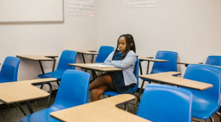 | GRIEF, PRESSURE & CONNECTION: A PRIMER ON EDUCATION IN A POST-PANDEMIC WORLD Katie Boody |
|
| 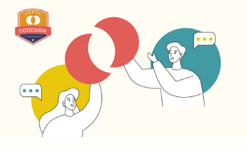 | A NEW KIND OF EVIDENCE FOR EDTECH COMPANIES Leanlab Educaton |
8 SKILLS EVERY EDTECH ENTREPRENEUR NEEDS TO BE SUCCESSFUL Leanlab Educaton |
|
| 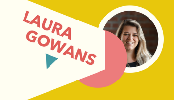 | MISSION-DRIVEN, COMMUNITY FOCUSED Laura Gowans |
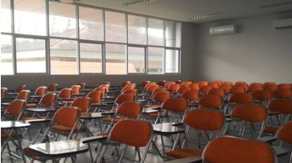 | 2021: AN IMPERATIVE TO INNOVATE Katie Boody |
MEET THE LEANLAB FAMILY
FEATURED
| 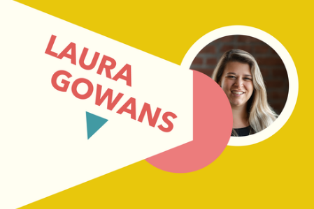 | 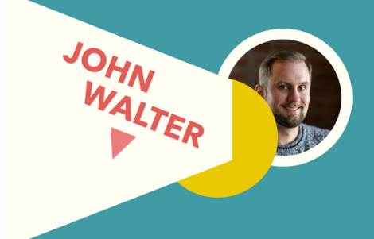 | 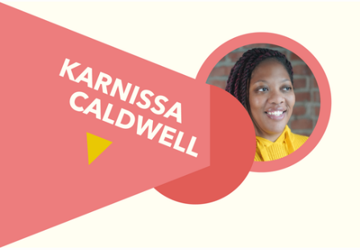 |
| MISSION-DRIVEN, COMMUNITY FOCUSED
Laura Gowans |
THE FIRST DRAFT OF EDUCATIONAL TRANSFORMATION
John Walter |
BUILDING RELATIONSHIPS AS THE FOUNDATION FOR LEARNING
Karnissa Caldwell |
LEANLAB IN THE NEWS
| 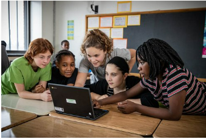 | 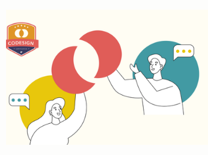 | ||
| THIS NEW CERTIFICATION CAN HELP EDUCATION TECH STARTUPS MAKE THE GRADE
KCSourcelink |
HERE ARE 2 RELIABLE SOURCES ON ED-TECH PRODUCTS THAT WILL WORK FOR YOUR DISTRICT
District Administration Magazine |
CODESIGNING THE FUTURE OF EDTECH TOOLS
Getting Smart |
LEANLAB EDUCATION LAUNCHES NEW CERTIFICATION FOR EDTECH COMPANIES
HRTech |
NEVER MISS A STORY. SIGN UP FOR OUR NEWSLETTER.
| For Entrepreneurs | For Educators | ||
|---|---|---|---|
| 8 SKILLS EVERY EDTECH ENTREPRENEUR NEEDS TO BE SUCCESSFUL Leanlab Education |
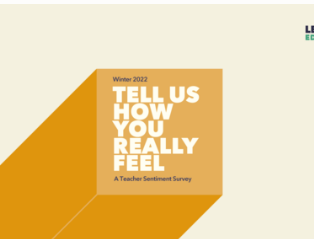 | TELL US HOW YOU REALLY FEEL: A TEACHER SENTIMENT SURVEY John Walter |
|
| 5 KEYS TO GETTING STARTED WITH EDTECH FUNDRAISING Leanlab Education |
GRIEF, PRESSURE & CONNECTION: A PRIMER ON EDUCATION IN A POST-PANDEMIC WORLD Katie Boody |
||
| A NEW VISION FOR EDTECH ACCELERATORS Sandro Olivieri |
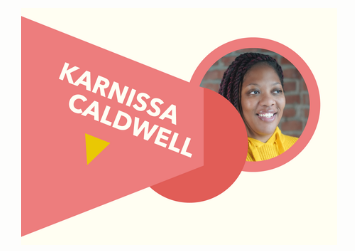 | BUILDING RELATIONSHIPS AS THE FOUNDATION FOR LEARNING Karnissa Caldwell |
|
| 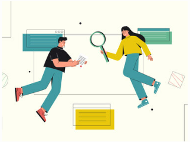 | THE BASICS OF BUILDING AN EVIDENCE-BASED EDTECH TOOL Leanlab Education |
TOWARDS AN EDUCATION SYSTEM THAT CREATES LIFELONG LEARNERS Andrea Cook |
|
| HERE’S ONE THING EDTECH FOUNDERS CAN DO TO HELP FAMILIES Leanlab Education |
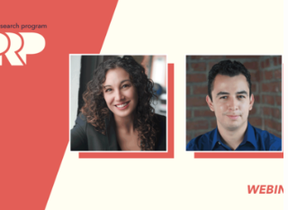 | EVERYTHING YOU NEED TO KNOW ABOUT THE PILOT RESEARCH PROGRAM Leanlab Education |
|
| 5 WAYS TO DIVERSIFY YOUR HIRING PIPELINE FOR STARTUPS Leanlab Education |
A LETTER ON KANSAS CITY’S EDUCATION DIGITAL DIVIDE Leanlab Education |
||